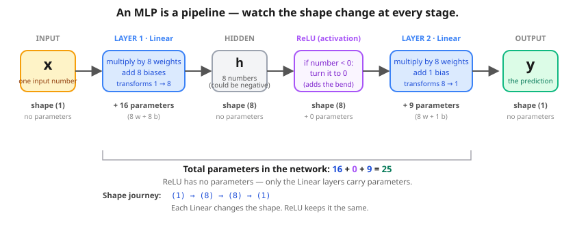
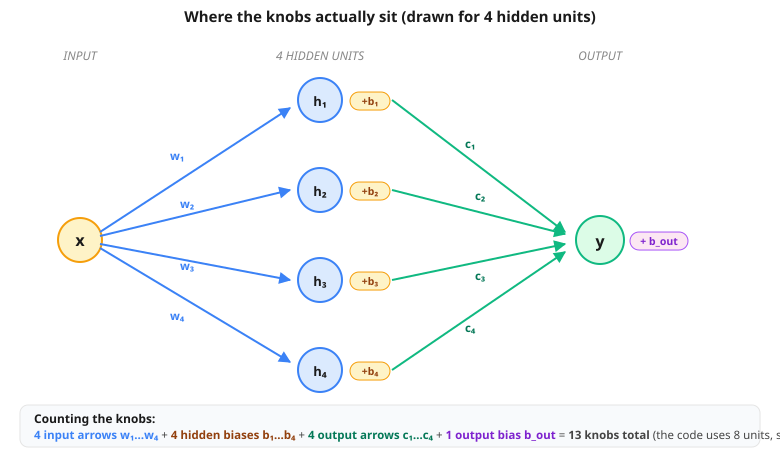

Lesson 1.5 — From linear regression to neural networks
Bridge between L1's two-knob model and L4's tiny BERT. Same training loop. Different model in the middle.
Steps in this lesson (matches the notebook)
- Step 1 — A new dataset: a curve
- Step 2 — Try linear regression (it fails)
- Step 3 — Add an x² feature (polynomial regression)
- Step 4 — One neuron (perceptron) → the neural network
- Step 5 — Train the MLP on the same data
- Step 6 — Side-by-side comparison
- Step 7.5 — The MLP IS the Transformer's feed-forward
- Step 7.6 — Stacking layers: why BERT uses 18
- Step 7.7 — Embeddings & attention work in BOTH frameworks
- Step 8 — The big reveal: what BERT actually is
Imagine you're trying to trace a shape with a stick:
- A straight stick can only draw straight lines. Great for a ramp, useless for a hill. → that's linear regression (L1).
- A bendy stick can follow curves, hills, wiggles. → that's a neural network.
- A Transformer (BERT, ChatGPT, PRAGMA) is just a bendy stick for sentences — many bendy pieces stacked up.
The cool part: you train all three the exact same way — the 5-line loop from L1. Only the "stick" changes. That's the entire lesson. Everything below just proves it with a real curve.
⬇ Want the proof? Keep going. Just wanted the idea? You can skip to the big reveal. ⬇
The two questions this lesson answers
- Is BERT just linear regression with more knobs? Or is it a different kind of model?
- When do you need a neural network instead of linear regression?
One dataset, four models, same training loop:
| Approach | Parameters | Can it fit a curve? |
|---|---|---|
Linear regression (L1: y = w*x + b) | 2 | ❌ No |
Polynomial regression (handcrafted x² feature) | 3 | ✅ Yes |
| Neural net (Linear → ReLU → Linear) | ~30 | ✅ Yes (no handcrafting) |
| Transformer (BERT, PRAGMA) | thousands–billions | ✅ Yes, on sequences |
Step 1 A new dataset: this one is a curve
L1's data was y = 2x + 1, a straight line. Linear regression nailed it because a line is exactly what linear regression can fit.
This time the secret rule is a parabola: y = x² − 4x + 3 plus a little noise. The y values go down and then up — no straight line can fit that.
Step 2 Try linear regression — it fails
Same model as L1: y = w*x + b. Two parameters. After 1000 steps the loss settles near 25 (compare to L1's 0.0001 on its straight-line data). No straight line can pass through a U-shape.
w = torch.tensor(0.0, requires_grad=True)
b = torch.tensor(0.0, requires_grad=True)
opt = torch.optim.SGD([w, b], lr=0.001)
for _ in range(1000):
y_pred = w * x_data + b
loss = ((y_pred - y_true) ** 2).mean()
opt.zero_grad(); loss.backward(); opt.step()Step 3 Trick: give linear regression more features
Key insight that confuses everyone: "linear regression" doesn't mean "fits a line in x". It means "linear in the parameters". We can give it any transformation of x as a feature.
Add x² as a feature and the model becomes:
y = w₁ · x + w₂ · x² + bStill linear regression (3 parameters). But now it can fit a parabola. After 2000 steps the loss drops to near zero and the recovered coefficients almost exactly match the true rule.
🤔 The catch. How would you know to add x²? What if the relationship were sin(x) or something more complex? For simple data you can guess; for complex data (text, images, banking events) there are too many possible features to enumerate. That's where neural networks come in.
Step 4 Enter the neural network
Before we wire up a whole network, let's zoom all the way in to its single building block: one neuron (the old-school name is a perceptron, invented back in 1958). This matters because a neural net isn't a new mysterious thing — it's just thousands of copies of this one tiny gadget, wired together. BERT, ChatGPT, PRAGMA: all the same atom, repeated.
A neuron is just a tiny voting machine
Give a neuron a few input numbers. It does three dead-simple things:
- Weigh each input — multiply every input by its own number, the weight. The weight says how much that input gets to "vote".
- Add up the votes — sum all the weighted inputs, plus one extra number called the bias (a thumb on the scale that makes the neuron easier or harder to set off).
- Decide — if the total clears the line, the neuron fires (outputs 1). If not, it stays quiet (outputs 0).
output = fire?( wA·A + wB·B + bias )A and B are the inputs. wA, wB are the weights it learns (the knobs from L1!). bias shifts the line. fire? is the yes/no decision. That's the whole thing — a weighted sum and a threshold.
Too simple to be useful? Watch. With the right weights, this one neuron can compute real logic. Let's teach it OR (fire if A or B is on) and AND (fire only if both are on). Inputs are just 0 (off) or 1 (on).
- Click set OR weights (wA=1, wB=1, bias=−0.5). Read the table — why does it fire on every row except (0,0)?
Show answer
With those weights the sum is
A + B − 0.5. For (0,0) that's−0.5→ quiet. For any row with a 1 in it, the sum is+0.5or more → fires. So it fires whenever at least one input is on. That's exactly OR. ✅ - Now click set AND weights (bias drops to −1.5). Why does only (1,1) survive?
Show answer
The sum is now
A + B − 1.5. One input on gives−0.5→ still quiet. You need both on to reach+0.5→ fires. Lowering the bias raised the bar so high that only "both on" clears it. That's AND. ✅ - Switch the target to XOR (fire if exactly one is on). Spend a minute trying every weight/bias combo. What's the best you can do?
Show answer
3 out of 4 — never 4. A single neuron can only draw one straight fence across the input square. OR and AND each need just one fence, so they're easy. But XOR's two "fire" corners sit on opposite diagonals — no single straight line can put them on one side and the two "quiet" corners on the other. To solve XOR you need a second layer of neurons drawing a second fence. That extra layer is the entire reason neural nets are built in layers — and why "deep" learning is deep.
So that's a neuron: a weighted sum, then a fire-or-stay-quiet decision. Now the leap to a neural network is small:
- Line up a row of these neurons side by side, all reading the same inputs but each with its own weights → that's a layer.
- Feed that layer's outputs into another layer of neurons → now you can draw the second fence, so XOR (and any curve) becomes possible.
One catch: a hard "fire / stay quiet" switch has no slope, so gradient descent (L1) can't tell which way to nudge the knobs. So real networks swap the hard switch for a soft bend — and that soft bend is the ReLU you're about to meet. Same idea (let the neuron be non-straight), but smooth enough to train. The picture below is exactly this: a row of 8 neurons (the hidden layer), with the soft bend in the middle.
A neural network is best pictured as a pipeline that transforms numbers through layers. Each layer takes the previous stage's numbers, does one specific operation, and hands them on. The simplest version (a Multilayer Perceptron, or MLP) — and the one we'll use today — looks like this:

(1) → (8) → (8) → (1). Linear stages carry knobs (16 + 9 = 25). ReLU carries none — it's just a rule, not a layer with parameters.x = 2.0. Here's what happens at each stage of the pipeline (these are the actual computations PyTorch will run):
x = 2.0 shape: (1)
│
▼ Linear ① — multiply by 8 weights, add 8 biases
[ 1.2, -1.4, 2.0, -0.6, 0.9, -2.1, 1.7, 0.3 ] shape: (8) ← raw hidden values
│
▼ ReLU — clip every negative to 0 (the "bend")
[ 1.2, 0.0, 2.0, 0.0, 0.9, 0.0, 1.7, 0.3 ] shape: (8) ← 3 negatives became 0
│
▼ Linear ② — multiply the 8 by 8 weights, sum, add 1 bias
y = 3.8 shape: (1) ← final predictionNotice how the shape swells from 1 to 8 in the first Linear, gets passed unchanged by ReLU (just zeroing negatives), then collapses back to 1 in the second Linear. Each Linear knows how to change a shape; ReLU just changes values.
x and watch every stage of the MLP compute live. The weights are fixed; only your x changes. Notice how many of the hidden values get zeroed by ReLU.# Weights are fixed for this playground (same MLP for everyone) w1 = [0.6, -0.7, 1.0, -0.3, 0.45, -1.05, 0.85, 0.15] # 8 input weights b1 = [0.0, 0.0, 0.0, 0.0, 0.0, 0.0, 0.0, 0.0] # 8 biases (try b1 != 0 in the notebook!) w2 = [0.5, 0.3, 0.7, -0.2, 0.6, 0.1, 0.8, -0.5] # 8 output weights b2 = 0.0 # final bias x = 2.0 # Layer 1 — multiply by w1, add b1 → 8 hidden numbers h_raw = [w1[i]*x + b1[i] for i in range(8)] # ReLU — clip negatives to 0 (the bend) h_relu = [max(0, h) for h in h_raw] # Layer 2 — weighted sum + b2 → final y y = sum(w2[i]*h_relu[i] for i in range(8)) + b2 print(f"h_raw = {h_raw}") print(f"h_relu = {h_relu}") print(f"y = {y}")
- Slide
xto 0. What'sy? Why?Show answer & explanation
y = 0.00. Because in this playground all the biases (
b1andb2) are zero. Withx = 0: everyh_raw[i] = w1[i]·0 + 0 = 0; ReLU of zero is zero;y = sum(w2 · 0) + 0 = 0. In a real trained MLP, the biases would be non-zero, so each hidden unit's "kink point" would land atx = -b/winstead of all at 0 — and y at x=0 would be non-zero. - Slide
xto -2. Count how many entries inh_reluare0.Show answer & explanation
At
x = -2, 5 of 8 hidden units get zeroed (vs only 3 atx = +2). Why?w1has a mix of positive and negative weights. With positivex, the negative-weight units produce negativeh_rawvalues (which ReLU kills). With negativex, it flips — now the positive-weight units go negative and get killed. A different set of units survives at each value of x. That's how the MLP carves the input range into pieces. - Untick use ReLU — now
h_relu = h_raw. Slidexaround. What happens toy?Show answer & explanation
y becomes a perfect straight line of x. Without the ReLU bend, you can do the algebra:
y = sum(w2[i] · (w1[i]·x + b1[i])) + b2simplifies to(sum w2·w1) · x + constant— i.e. one slope, one intercept. Two stacked Linears collapse into one. That's the whole reason ReLU exists — to stop them from collapsing. - Re-tick ReLU. Notice some hidden units stay at 0 across a wide range of
x— they've "given up" on that part of x.Show answer & explanation
Each unit is alive only when
w1[i]·x + b1[i] > 0. With biases at 0 here, that means each unit is alive on exactly one side ofx = 0: positive-w units fire only when x > 0, negative-w units fire only when x < 0. In a real network, biases shift these "kink points" all over the x-axis so different units cover different regions — together they tile the input range and let the network bend any way it needs.
MLP.forward() of lesson_01_5_from_linear_to_neural.ipynb — running with torch handles 25 knobs and gradients automatically.
- If the number is negative → turn it into 0.
- If the number is positive → leave it alone.
ReLU(3) = 3. ReLU(−2) = 0. ReLU(0) = 0.
This kind of "do one little non-straight thing to each number" rule is called an activation function. Every neural network has one between its linear layers. ReLU is the most common one; GELU (in BERT/PRAGMA) is a smoother cousin. The standalone word "ReLU" comes from "Rectified Linear Unit" — fancy name, dumb-simple rule.
That tiny rule is where the bend comes from. ReLU(w·x + b) is flat zero until x is big enough to make the inside positive, then it's a straight ramp. One hockey-stick. Stack a few of those, add them up, and you get a curve (you'll see this in the next picture).
Without the activation, two stacked Linears would just produce another single straight line (composing linears gives a linear — go ahead and try it on paper). With ReLU in between, the network can model curves, kinks, and arbitrarily complex shapes.
x² — the network learns them automatically.

So when the picture above shows "8 hidden units", picture 8 hockey-sticks being placed at different spots along the x-axis, then weighted and summed. The second Linear layer's job is to decide how much each bend contributes. The network learns where to put the bends — you never have to.
Go deeper: how FEW hidden units can fit this parabola?
I trained the same MLP at different sizes (Linear→ReLU→Linear, 2000 Adam steps) on the parabola. Real numbers:
| hidden units | params | final MSE |
|---|---|---|
| 1 | 4 | 15.46 ❌ |
| 2 | 7 | 15.99 ❌ |
| 4 | 13 | 0.23 ✅ |
| 8 | 25 | 0.16 ✅ |
| 16 | 49 | 0.15 ✅ |
A clean cliff: 1 or 2 bends can't make a U-shape — the loss stays stuck around 15 (same as plain linear regression). At 4 bends the loss collapses to ~0.23 (essentially the noise floor — you can't beat the random noise we added). 8 and 16 give tiny extra gains. Bigger isn't always better; just enough is the sweet spot.
Go deeper: why does the ReLU bend let it fit any curve?
Each hidden unit computes ReLU(w·x + b) — a flat zero until x passes a threshold, then a straight ramp. That's a single "hockey-stick" bend. One bend isn't much, but if you add up many hockey-sticks with different thresholds and slopes, you can trace any wiggly curve as closely as you like — like building a smooth shape out of lots of tiny straight LEGO pieces.
That's all the universal approximation theorem says: enough bends → any shape. The network learns where to put each bend (the w and b) by gradient descent. Without the ReLU there are no bends, so stacking layers just gives you one straight line again.
Where do the knobs actually sit?
"25 parameters" sounds vague. Let's look at where each one lives. Picture the network as wires between three columns of dots — the input, the hidden units, the output. Every wire is one knob, and each unit has one extra knob (its bias).

H hidden units, total knobs = 3·H + 1.
Hinput weights (one wire fromxinto each unit)Hbiases (one per unit — sets where the bend lives)Houtput weights (one wire out of each unit, weighting its contribution)- 1 final output bias
class MLP(nn.Module):
def __init__(self, hidden=8):
super().__init__()
self.layer1 = nn.Linear(1, hidden) # 8 input weights + 8 biases = 16 knobs
self.layer2 = nn.Linear(hidden, 1) # 8 output weights + 1 bias = 9 knobs
def forward(self, x):
h = self.layer1(x)
h = F.relu(h)
return self.layer2(h)So layer1 holds 2 knobs per unit (its wi and bi) and layer2 holds the remaining 1 per unit (ci) plus the single output bias. 16 + 9 = 25, which matches 3×8 + 1. Now when you read "this Transformer has 100 million parameters", you know that just means 100 million little numbered wires + biases inside many such boxes stacked up.
Step 5 Train the MLP on the SAME parabola data
Same training loop. Same MSE loss. Same Adam optimiser. Only the model class changed.
The notebook shows Karpathy-style snapshots at steps 0 / 100 / 500 / 1000 / 2000 — you can SEE each hidden unit's "knee" sliding into place over training. By step 2000 the 8 knees cover different slices of x and sum (weighted by layer 2) to recreate the parabola.
Step 6 Side-by-side comparison
| Model | Params | Final MSE |
|---|---|---|
| Linear regression | 2 | ~25 ❌ |
| Polynomial regression | 3 | ~0.25 ✅ |
| Neural network | 25 | ~0.25 ✅ |
The polynomial uses 3 parameters; the neural net uses 25. The neural net has extra capacity it didn't strictly need for this simple problem. So why ever use a neural network? Because for complex data you can't say "add x²" — the data is too complex for that intuition to apply. A neural network with enough capacity figures out the features for you.
Step 7.5 Heads-up — you just built the MLP that lives inside every Transformer
The MLP you trained — Linear → ReLU → Linear — has a fancy name when it shows up inside a Transformer: the feed-forward sub-layer (or "FFN", or "MLP block"). They all mean the same thing.
Two tiny differences between your MLP and BERT's feed-forward:
Your MLP (L1.5)
Linear(1, 8)
ReLU
Linear(8, 1)25 parameters total.
BERT feed-forward
Linear(512, 2048)
GELU
Linear(2048, 512)~2 million parameters per layer. Same shape, bigger.
So when you read "feed-forward layer" in any Transformer paper, picture the small MLP you trained on the parabola. Same architecture, scaled up.
Step 7.6 What does "stacking layers" mean? Why does BERT use 18?
You've trained an MLP with one hidden layer. BERT stacks 18 blocks, where each block is (attention + feed-forward). Common confusion:
Attention happens in EVERY single layer. The WHOLE block (attention + FFN) is duplicated 18 times — not just the FFN, not just the attention. The embedding only happens once (at the bottom). The output head only happens once (at the top). Everything in between repeats.
Why depth matters intuitively. Each block builds on the previous block's output:
- Block 1 — each token looks at its neighbours and absorbs simple context.
- Block 2 — each token (now context-aware) looks at OTHER context-aware tokens. So it sees neighbours-of-neighbours.
- Block 18 — 18 successive rounds of attention have stacked up. The vector now encodes very long-range, hierarchical patterns.
The notebook runs an empirical depth test on a sine wave: depth 1 → loss 0.10, depth 2 → 0.0016, depth 4 → 0.0009. Deeper models build hierarchical features that shallow models can't.
Step 7.7 Embeddings & attention work in BOTH frameworks
Before L2 and L3 — a subtle point. So far we've sorted models into two camps:
- Linear regression / polynomial regression — no nonlinearity. Just
y = Σ wᵢ · feature_i + b. - Neural networks — at least one nonlinearity (ReLU, GELU, softmax).
Embeddings and attention are NOT model classes. They're building blocks that plug into either kind of model. You can use an embedding inside a linear-regression-style head, or inside a neural-net head. Same for attention.
| Block | Adds nonlinearity? | What it adds |
|---|---|---|
| Embedding | No (pure lookup) | Trainable vector per discrete input |
| Attention | Yes (softmax inside) | Cross-token mixing |
| Feed-forward | Yes (GELU inside) | Per-token nonlinear capacity |
The notebook trains four small models — same data, mix-and-match — to drive this home:
| Demo | Building block | Head | Worked? |
|---|---|---|---|
| A | Embedding | Linear (regression style) | ✅ |
| B | Embedding | MLP (neural-net style) | ✅ |
| C | Attention | Linear (regression style) | ✅ |
| D | Attention | MLP (neural-net style) | ✅ |
Key insight: embedding and attention are reusable building blocks. The "linear vs neural" decision is a separate axis — it's about whether the head that consumes their output has a nonlinearity. A real Transformer block uses the MLP option (Demo D), and stacks 18 copies of it.
Step 8 The big reveal — what IS BERT, then?
BERT, GPT, PRAGMA — they are NEURAL NETWORKS. Specifically a kind called Transformers. And a Transformer is built out of three pieces, all of which you now know:
The "trick" of the Transformer is just interleaving attention and feed-forward many times. They do very different things — and that difference is what makes the whole thing work. Let's see it on an actual sentence.

"the dog says bark"). Attention (blue, left) connects every token to every other — the output vectors are blends of the inputs. Feed-forward (green, right) gives each token its own little MLP — the boxes never talk to each other. One mixes across; the other thinks within.Watch the sentence go through the stack
Same sentence, "the dog says bark", walked through a real 18-layer encoder:
| After… | What each word's vector now "knows" |
|---|---|
| Embedding | Each word is just its own meaning, isolated. "dog" means "dog"; nothing about being followed by "says". |
| Block 1 attn | "dog" has now blended in a bit of "the" (it knows there's a determiner before it) and "says bark" (it knows there's a verb-object pair after it). One round of cross-mixing. |
| Block 1 FFN | Each blended vector gets refined by its own MLP — gradients squeeze useful patterns into each token (e.g. "I'm a noun in the subject position"). No cross-talk. |
| Block 2 attn | "dog" attends again — but now to the Block-1 outputs of the other tokens, which already carry context. So "dog" is now seeing "the (knows it's a determiner)" and "says (knows it precedes a sound)". Neighbours-of-neighbours. |
| …blocks 3–17… | Each block adds one more "round" of cross-context, refining inside each token. After 5 layers, "dog" has rich grammatical context; after 10, semantic; after 18, deep abstract patterns. |
| Output head | Each token's vector is now a tiny summary of its role in the whole sentence. The head reads the masked position's vector and predicts a word. |
- The 5-line training loop (predict → loss → backward → step)
- Gradient descent (Adam or SGD)
- Trainable parameters (just lots more in BERT)
w·x + b; BERT has 18 stacks of attention + feed-forward — one for cross-token mixing, one for per-token thinking, repeating.
Go REALLY deep: walk a sentence through all 18 layers and watch dog wake up
The big intuition first
Every layer produces, at each token's position, one vector — say 16 numbers (or 1024 in PRAGMA). That vector is a kind of "knowledge bundle": a compressed summary of everything the model has figured out about this token, in this specific sentence, so far. It starts shallow and gets richer with each block. The key intuition:
- The vector itself never "looks like" something we can read. It's just 16 (or 1024) numbers. Nobody designs what they mean.
- But during training, those numbers learn to encode useful "directions" — gradient descent forces them into shapes that help the model predict masked words.
- The features we describe below (like "animal-ness" or "subject role") are interpretations — the model never literally says "dim 4 = subject role". It just learns combinations of dimensions that, taken together, do the job.
- Think of each layer as adding one more "lens" to the vector — making it sharper at a different kind of pattern. Shallow layers handle surface stuff (grammar, neighbours); deep layers handle abstract stuff (themes, intent, task-readiness).
The widget below walks dog through a real 18-block Transformer. Drag the slider and watch dog's "knowledge bundle" fill up.
Reading the widget: a few notes
- The attention bars are illustrative. Real attention weights at each layer are not directly interpretable — but the SHAPE (e.g. self-loop dominant early, neighbours later) is real. Researchers do find layer-by-layer patterns like this in trained Transformers.
- The features are aspirational. No one knows the exact "meaning" of dim 7 in layer 5. But papers (like "BERTology" surveys) show that roughly: early layers learn surface/grammar, middle layers learn semantics, late layers specialise for the task. The widget shows that shape.
- The vector is always the same size. "More knowledge" doesn't mean the vector gets bigger — it means the 16 numbers get arranged into a more sophisticated combination. Like how a 16-pixel image of a person and a 16-pixel image of a car use the same 16 pixels, just in different patterns.
Why does this work? The gradient story
Nobody hand-codes "layer 5 = subject role". So how do these features emerge? Gradient descent figures it out. Here's the magic:
- The model is trained to predict masked words. If it can't, loss is high.
- Loss flows backward through every block, every attention head, every FFN.
- Each parameter (knob) gets a tiny nudge in the direction that reduces the loss next time.
- Over millions of training examples, the knobs in each block drift into configurations that solve a useful sub-problem — because solving that sub-problem helps predict masked words.
- The model never "decides" what each layer should do. The training data and the optimiser force the layers to specialise — because that's the path of least loss.
- A straight line can't fit a curve — but stacking linear layers with a ReLU bend between them can fit almost anything.
- That bend-and-combine machine (the MLP) is the feed-forward block inside every Transformer.